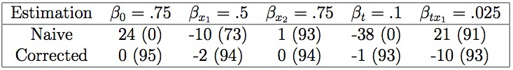
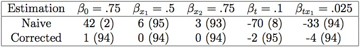
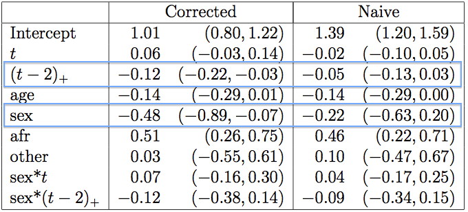

class: center, middle # Outcome Dependent Sampling for Continuous and Count Response Longitudinal Data #### Lee S. McDaniel #### University of Wisconsin, Madison ??? * Thank you for having me * Talking about longitudinal data when sampling is related to the outcome * Only talking about the case when sampling is at the subject level --- class: gray, big # Example - ADHD Study * Goal: Identify risk and prognostic factors for ADHD early * Sampling: 255 subjects, about half cases/controls Cases: Referred by parent or teacher Controls: Matched demographically * Followed up for 15 years (I have 8) * <b>Analyze</b> time course of hyperactivity symptom count ??? * Young children, about 5 years old * Referral correlated * Not a physician diagnosis * Look at hyperactivity, apparent time trend * time and intercept can be biased --- class: gray, big # Data and Model of Interest * $Y\_j$ Poisson or continuous outcome at times $t\_j$ * $x\_j$ vector of covariates at times $t\_j$ * $X = (x\_1, \ldots, x\_p)$ is matrix of covariates Marginal population mean model for $Y\_j$ $$ \mu\_{P\_j} = E(Y\_j | X) = g^{-1}(x\_j' \beta) $$ No interference assumption $$ E(Y\_j | X) = E(Y\_j | x\_j) $$ * $Z = 1$ means referred * $S = 1$ means sampled ??? * mu equation means some function of the mean is linear in covariates * we assume that covariates a times other than j have information about E(Y|X) --- class: gray, big # Assumptions (1) Known value for $$ \frac{\mbox{Pr}(S=1 | Z=1)}{\mbox{Pr}(S=1 | Z=0)} = \frac{\pi(1)}{\pi(0)} $$ (2) Sampling only depends on $Z$ Allows three modeling steps <div style="position:relative; left:75px"> 1. Estimate $\mbox{Pr}(Z=1|Y\_j, X)$ from sample, for each $t\_j$ 2. Compute $\mbox{Pr}(S=1|Y\_j,X)$, for each $t\_j$ 3. Estimate $\mbox{E}(Y\_j | X)$ from sample </div> ??? * We assume known value for the ratio of prob sampled given referred over prob sampled given not-referred * Assume sampling is conditionally independent of response and covariates given referral status * We can have some stratification * First estimate prob referred given outcome at each time point and covariates * Then compute prob sampled given outcome at each time point and covariates * Unintuitive, but the conditional probability exists and can be modeled * Then finally estimate the marginal model we're interested in from the sampled data --- class: gray # Estimate $\mbox{Pr}(Z|Y\_j, X)$ from $S$ <div style="position:relative; left:0px"> In the population: </div> $$ \mbox{Pr}(Z=1|Y\_j, X) = \lambda\_{P\_j} (y, X) = \mbox{logit}^{-1} \left\\{w\_{1j}'\gamma\_1 + h(y) w\_{2j}' \gamma\_2 \right\\} $$ In the sample: $$ \mbox{Pr}(Z=1|Y\_j, X, S) = \lambda\_{S\_j} (y, X) = \mbox{logit}^{-1} \left\\{ w\_{1j}'\gamma\_1 + h(y) w\_{2j}' \gamma\_2 + \log\pi(1)/\pi(0)\right\\} $$ # Compute $\mbox{Pr}(S | Y\_j , X)$ $$ \rho\_j (y, X) = \mbox{Pr}(S = 1| y, X) $$ $$ \rho\_j (y, X) = \pi(0) \left\\{1 - \lambda\_{P\_j}(y, X) \right\\} + \pi(1)\lambda\_{P\_j}(y, X) $$ ??? * In the population model, we have a logistic regression model * the w's are some covariates, possibly a subset of the covariates in X * include these covariates and interactions with the response * Response can be some non-identity function * Then we look at the ratio of prob of being sampled given y to prob of being sampled given y_0 * rho ratio doesn't involve beta --- class: gray, big # Estimate $\mbox{E}(Y\_j | X)$ <div style="position:relative; left:0px"> In the population, conditional density is <b>exponential family</b>: </div> $$ f\_P (y | X) = \exp \left\\{ \frac{\theta\_j y - b(\theta\_j) }{\phi} + c(y; \phi) \right\\} $$ Use canonical link: $$ g(\mu\_{P\_j}) = g(\mbox{E}(Y\_j | X)) = x\_j' \beta = \theta\_j $$ In sample: $$ f\_{S} (y | X) \propto \exp \left\\{ \frac{\theta\_j y - b(\theta\_j) }{\phi} + c(y; \phi) + \log\rho\_j(y, X) \right\\} $$ ??? * In the population, we assume an exponential family distribution * we estimate the coefficients in beta using a canonical link function * Still end up with an exponential family distribution * rho ratio doesn't involve coefficients * From here: get link and variance in sample --- # Simulations $$ g(Y\_j) = \beta\_0 + \beta\_{x\_1} x\_1 + \beta\_{x\_2} x\_2 + \beta\_{t} t\_j + \beta\_{tx\_1} t\_j*x\_1 $$ Count data: <center> <div width="600px">  </div> </center> Continuous data: <center> <div width="600px">  </div> </center> ??? * 2000 replicates * x1 and x2 time-invariant and binary * Bias is mostly corrected, coverage probability is vastly improved * In continuous data, estimate dispersion parameter * extra variability from this estimation doesn't throw off SE estimation --- # ADHD Example Response is hyperactivity symptom count <center> <div width="600px" style="position:relative; top:50px">  </div> </center> ??? * After correction, we see a different time trend * also now the gender is related to the hyperactivity count * This is as we expect, boys are more hyperactive